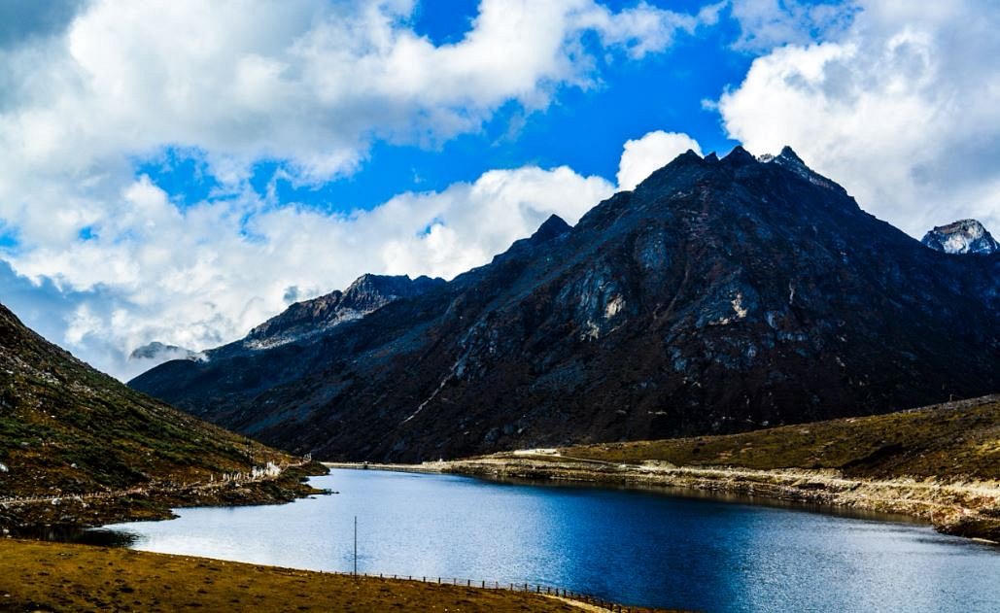
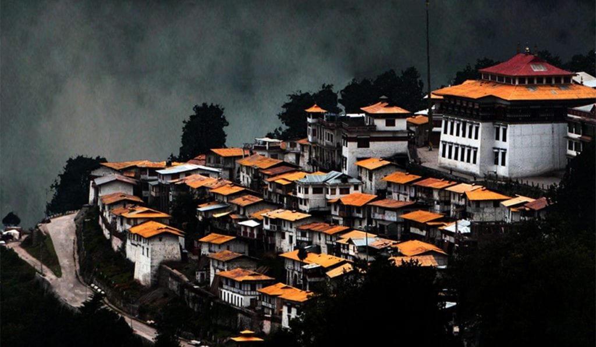

A far village in the Tawang highlands, not a casual day trip
Mago lies deeper in the Tawang highlands than the usual monastery-and-lake circuit. The road is slower, the settlement smaller, and the reason to go is the country itself — high pasture, cold air and a Monpa village that does not sit on every first-timer’s list.
Treat it as an add-on for travellers who already have enough nights in Tawang, not as a replacement for the monastery day. Access and permits should be confirmed before you lock the date. Winter can close the last stretch without much notice.

The first weeks the last stretch usually opens.
Green high country, but cloud and rain on the feeder road.
The better extra day if Tawang weather is stable.
Often a no — ice and closed tracks.



Tell us your Tawang night count. We will say whether Mago is realistic or whether the week should stay on the main ridge and lakes.